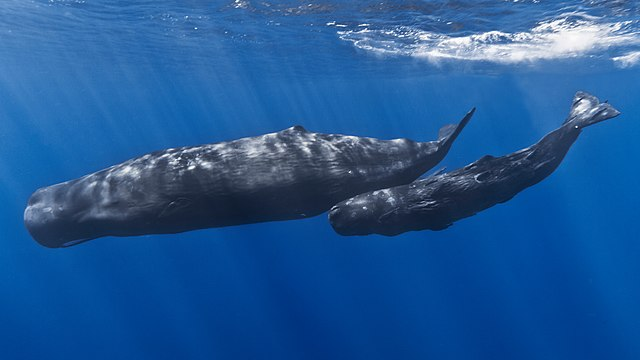

향유고래 는 이빨고래류 중에 가장 큰 종이다. 이빨을 가진 동물로는 지구상에 존재했던
그 어떤 종보다도 크다. 머리에 밀랍으로 가득찬 경랍기관이 있으며, 거대한 사각형
머리가 특징적이다. 허먼 멜빌의 소설 「모비 딕」에 등장하는 것으로 유명하다.

울산 반구대 암각화에 두 마리가 새겨져 있으며, 2004년 동해안에서 70년 만에 발견된 바 있다. 학명은 Physeter macrocephalus / Physeter catodon이다. 몸길이는 수컷 17m~21m, 암컷 18m, 몸무게는 수컷 35~74t, 암컷 20~36t이다. 온몸이 회색이고 배쪽에 담색의 얼룩점이 있는데 몸빛깔은 나이와 더불어 흰색으로 변하는 경향이 있다. 머리는 성장에 따라 커져서 몸길이의 3분의 1 정도를 차지하게 된다. 뇌의 무게는 8 kg 정도 이다. 등지느러미는 없지만 파도 모양의 피부돌기가 있다. 아래턱은 통나무처럼 가늘고 길며 한쪽에 20~28개의 큰 이빨이 있다. 위턱의 이빨은 퇴화되어 작아져서 눈에 띄지 않는다. 가슴지느러미는 몸에 비해 대단히 작다. 잠수능력이 뛰어나서 1시간 30분이나 잠수하기도 하며 수심 2,250m(7,382 ft)나 되는 심해까지 내려가기도 한다. 참고로, 민부리고래의 최고 잠수기록은 2,992m(9,816 ft)이다. 오징어나 커다란 대왕오징어를 주식으로 하며 물고기도 먹는다. 4년마다 한배에 1마리를 낳는데 임신기간은 15~16개월 이다. 세계 각지의 바다에 분포하며 브리그모파이세터가 조상격이다.